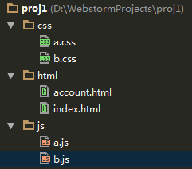
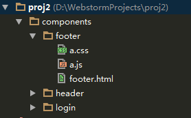

Created by gejiawen for @SCLOUD-SH
代码问题
代码风格规范、代码管理规范、包管理规范、文档规范
设计问题
架构设计、文件目录设计、模块设计、接口设计
开发问题
开发流程、迭代管理、功能测试、bug修复
质量保证问题
单元测试、集成测试、自动化测试
部署问题
部署方式、资源缓存及更新
统计及安全问题
日志统计、安全考虑
良好的代码规范在团队协作中扮演了一个重要的角色。
代码规范通常情况下不以好坏来评价，关键在于统一和遵守。
统一的代码托管、版本控制。
有的语言天生自带包管理机制，而有的语言没有。
包管理其实是一种模块化设计的实现。
个人不太赞同的一种观点：代码即文档
良好的文档在软件开发过程中是非常必须的。
这里仅用FE开发中的两种文件目录设计来举个例子
 
先暂时跳过，待最后再来聊聊这块内容
质量保证（测试）是开发过程中比不可少的一个环节。
手段多样：单元测试、集成测试、功能测试、各种测试框架。
两种部署方式：覆盖式部署、版本化部署
不同的部署方式将会对开发流程及迭代管理产生一定的影响
这部分将会描述Web相关的开发模型以作抛砖引玉。
分解需求时，可能会遇到一些在评审阶段并未意识到的问题，此时需要根据情况进行需求再评审或者跟产品确认。
软件都是在不停的迭代中往前推进的。
跟部署方式直接关联
这种情况下，线上跑的代码其实就是master分支上的代码。
这种模型相对前一种稍微复杂，它要求所有的（Major）版本都可追溯。
这里说的功能测试其实更多的是倾向功能实现者的自我测试。
线上代码可能会产生各种各样性质的bug，我们需要一种好用的机制去跟踪bug的修复。
gitlab的issue系统是一个非常轻量、灵活的解决方案，而且与VCS系统集成，使用起来很方便。